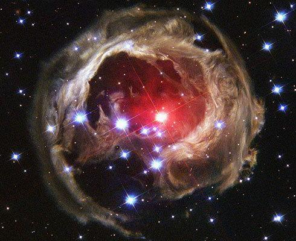
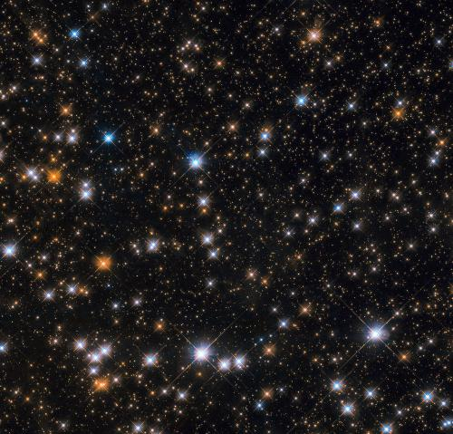
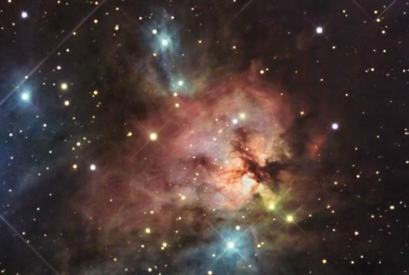
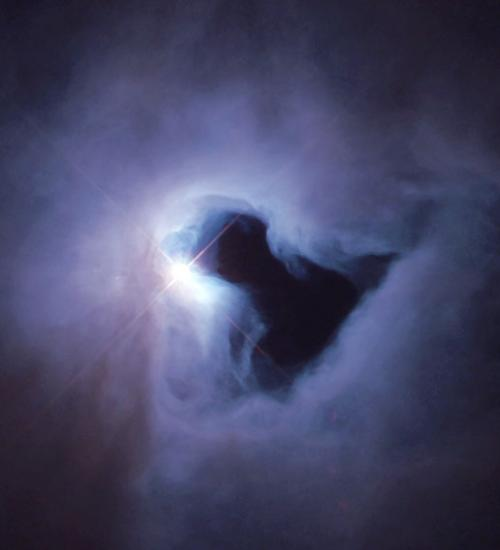

星云和星团：
星云（Nebula）是稀薄的气体或尘埃构成的天体之一。包含了除行星和彗星外的几乎所有延展型天体。
它们的主要成份是氢，其次是氮，还含有一定比例的金属元素和非金属元素。
1990年哈勃望远镜升空以来的研究还发现含有有机分子等物质。

星团（Cluster）是指恒星数目超过10颗以上，并且相互之间存在物理联系（引力作用）的星群。
由十几颗到几十万颗恒星组成的，结构松散，形状不规则的星团称为疏散星团，
它们主要分布在银道面因此又叫做银河星团，主要由蓝巨星组成，例如昴宿星团（又名昴星团）；
上万颗到几十万颗恒星组成，整体像圆形，中心密集的星团称为球状星团。
发光星云和反射星云：
发光星云（Emission nebula）由星际气体组成的发光的云。光谱中在很弱的连续背景上有许多发射线的亮星云。
发射线主要由氢、氦、氧、硫、氖和铁的原子和离子产生，其中有些是禁线。
在发射星云内或近旁总有一颗或一群高温恒星，光谱型属O、B0或B1（见恒星光谱分类），在这些星的紫外辐射作用下，星云中的气体被激发而发光。
发射星云由气体和尘埃组成，前者估计占星云总质量的99％，后者只有1％。

反射星云（Reflection nebula）反射星云本身不发光，其主要成分是星际尘埃。
它们能够被看到主要是因为它们反射了邻近恒星发出的光。
这类星云通常都呈蓝色，这是因为它们反射的蓝色光较多。
事实上，发光星云和反射星云通常是不可分的，它们总是呆在一起。
我们把它们统称为“漫射星云”。这些星云中通常会孕育着年轻的恒星。